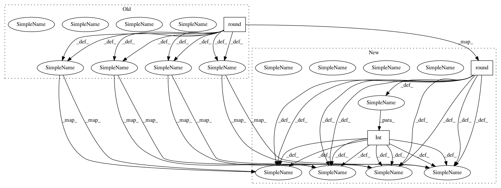

6da0d3cd3b28bb85c2766a90fc205ab80b932eb0,niftynet/network/simulator_gan.py,ImageGenerator,layer_op,#ImageGenerator#,35
Before Change
keep_prob_ph = 1 // not passed in as a placeholder
for i in range(4):
ch.append(round((ch[-1] + conditioning_channels * self.generator_shortcuts[i]) / 2))
sz = [[round(i / 2) for i in sz[0]]] + sz
if spatial_rank == 3:
def resize_func(x, sz):
sz_x = x.get_shape().as_list()
r1 = tf.image.resize_images(tf.reshape(x, sz_x[:3] + [-1]), sz[0:2])
r2 = tf.image.resize_images(tf.reshape(r1, [sz_x[0], sz[0] * sz[1], sz_x[3], -1]),
[sz[0] * sz[1], sz[2]])
return tf.reshape(r2, [sz_x[0]] + sz + [sz_x[-1]])
elif spatial_rank == 2:
resize_func = tf.image.resize_bilinear
def concat_cond(x, i):
if add_noise:
noise = [tf.random_normal(x.get_shape().as_list()[0:-1] + [add_noise], 0, .1)]
else:
noise = []
if conditioning is not None and self.generator_shortcuts[i]:
with tf.name_scope("concat_conditioning"):
resized_cond = resize_func(conditioning, x.get_shape().as_list()[1:-1])
return tf.concat([x, resized_cond] + noise, axis=3)
else:
return x
def conv(ch, x):
with tf.name_scope("conv"):
conv_layer = ConvolutionalLayer(ch, 3, w_initializer=w_init)
return tf.nn.relu(conv_layer(x, is_training=is_training))
def up(ch, x):
with tf.name_scope("up"):
deconv_layer = DeconvolutionalLayer(ch, 3, stride=2, w_initializer=w_init)
return tf.nn.relu(deconv_layer(x, is_training=is_training))
def up_block(ch, x, i):
with tf.name_scope("up_block"):
u = up(ch, x)
cond = concat_cond(u, i)
return conv(cond.get_shape().as_list()[-1], cond)
def noise_to_image(sz, ch, random_source):
noise_size = random_source.get_shape().as_list()[1]
batch_size = random_source.get_shape().as_list()[0]
with tf.name_scope("noise_to_image"):
g_no_0 = np.prod(sz) * ch
w1p = tf.get_variable("G_W1p", shape=[noise_size, g_no_0], initializer=w_init)
b1p = tf.get_variable("G_b1p", shape=[g_no_0], initializer=b_init)
g_h1p = tf.nn.dropout(tf.nn.relu(tf.matmul(random_source, w1p) + b1p), keep_prob_ph)
g_h1p = tf.reshape(g_h1p, [batch_size] + sz + [ch])
g_h1p = concat_cond(g_h1p, 0)
return conv(ch + conditioning_channels, g_h1p)
g_h1 = noise_to_image(sz[0], ch[0], random_source)
g_h2 = up_block(ch[1], g_h1, 1)
g_h3 = up_block(ch[2], g_h2, 2)
g_h4 = up_block(ch[3], g_h3, 3)
g_h5 = up_block(ch[4], g_h4, 4) // did not implement different epsilon
with tf.name_scope("final_image"):
if add_noise:
noise = tf.random_normal(g_h5.get_shape().as_list()[0:-1] + [add_noise], 0, .1)
g_h5 = tf.concat([g_h5, noise], axis=3)
x_sample = ConvolutionalLayer(1, 3, with_bn=False, with_bias=True,
w_initializer=w_init,
b_initializer=b_init)(g_h5, is_training=is_training)
x_sample = tf.nn.dropout(tf.nn.tanh(x_sample), keep_prob_ph)
with tf.name_scope("summaries_verbose"):
tf.summary.histogram("hist_g_h2", g_h2, [logging.LOG])
tf.summary.histogram("hist_g_h3", g_h3, [logging.LOG])
After Change
keep_prob_ph = 1 // not passed in as a placeholder
for i in range(4):
ch.append(round((ch[-1] + conditioning_channels * self.generator_shortcuts[i]) / 2))
sz = [[int(round(i / 2)) for i in sz[0]]] + sz
if spatial_rank == 3:
def resize_func(x, sz):
sz_x = x.get_shape().as_list()
r1 = tf.image.resize_images(tf.reshape(x, sz_x[:3] + [-1]), sz[0:2])
r2 = tf.image.resize_images(tf.reshape(r1, [sz_x[0], sz[0] * sz[1], sz_x[3], -1]),
[sz[0] * sz[1], sz[2]])
resized_3d = tf.reshape(r2, [sz_x[0]] + sz + [sz_x[-1]])
return resized_3d
elif spatial_rank == 2:
resize_func = tf.image.resize_bilinear
def concat_cond(x, i):
if add_noise:
noise = [tf.random_normal(x.get_shape().as_list()[0:-1] + [add_noise], 0, .1)]
else:
noise = []
if conditioning is not None and self.generator_shortcuts[i]:
with tf.name_scope("concat_conditioning"):
resized_cond = resize_func(conditioning, x.get_shape().as_list()[1:-1])
return tf.concat([x, resized_cond] + noise, axis=-1)
else:
return x
def conv(ch, x):
with tf.name_scope("conv"):
conv_layer = ConvolutionalLayer(ch, 3, w_initializer=w_init)
return tf.nn.relu(conv_layer(x, is_training=is_training))
def up(ch, x):
with tf.name_scope("up"):
deconv_layer = DeconvolutionalLayer(ch, 3, stride=2, w_initializer=w_init)
return tf.nn.relu(deconv_layer(x, is_training=is_training))
def up_block(ch, x, i):
with tf.name_scope("up_block"):
u = up(ch, x)
cond = concat_cond(u, i)
return conv(cond.get_shape().as_list()[-1], cond)
def noise_to_image(sz, ch, random_source):
noise_size = random_source.get_shape().as_list()[1]
batch_size = random_source.get_shape().as_list()[0]
with tf.name_scope("noise_to_image"):
g_no_0 = np.prod(sz) * ch
w1p = tf.get_variable("G_W1p", shape=[noise_size, g_no_0], initializer=w_init)
b1p = tf.get_variable("G_b1p", shape=[g_no_0], initializer=b_init)
g_h1p = tf.nn.dropout(tf.nn.relu(tf.matmul(random_source, w1p) + b1p), keep_prob_ph)
g_h1p = tf.reshape(g_h1p, [batch_size] + sz + [ch])
g_h1p = concat_cond(g_h1p, 0)
return conv(ch + conditioning_channels, g_h1p)
g_h1 = noise_to_image(sz[0], ch[0], random_source)
g_h2 = up_block(ch[1], g_h1, 1)
g_h3 = up_block(ch[2], g_h2, 2)
g_h4 = up_block(ch[3], g_h3, 3)
g_h5 = up_block(ch[4], g_h4, 4) // did not implement different epsilon
with tf.name_scope("final_image"):
if add_noise:
noise = tf.random_normal(g_h5.get_shape().as_list()[0:-1] + [add_noise], 0, .1)
g_h5 = tf.concat([g_h5, noise], axis=3)
x_sample = ConvolutionalLayer(1, 3, with_bn=False, with_bias=True,
w_initializer=w_init,
b_initializer=b_init)(g_h5, is_training=is_training)
x_sample = tf.nn.dropout(tf.nn.tanh(x_sample), keep_prob_ph)
//with tf.name_scope("summaries_verbose"):
// tf.summary.histogram("hist_g_h2", g_h2, [logging.LOG])
// tf.summary.histogram("hist_g_h3", g_h3, [logging.LOG])
In pattern: SUPERPATTERN
Frequency: 3
Non-data size: 3
Instances
Project Name: NifTK/NiftyNet
Commit Name: 6da0d3cd3b28bb85c2766a90fc205ab80b932eb0
Time: 2017-08-17
Author: wenqi.li@ucl.ac.uk
File Name: niftynet/network/simulator_gan.py
Class Name: ImageGenerator
Method Name: layer_op
Project Name: tryolabs/luminoth
Commit Name: 79177c2fd04b57ef73dd80d836d39e17876f9012
Time: 2018-11-12
Author: dekked@gmail.com
File Name: luminoth/utils/predicting.py
Class Name: PredictorNetwork
Method Name: predict_image
Project Name: NifTK/NiftyNet
Commit Name: e2a6b11582a9379afac0d7bcd7acc426e1e6119d
Time: 2018-02-21
Author: eli.gibson@gmail.com
File Name: niftynet/network/simple_gan.py
Class Name: ImageGenerator
Method Name: layer_op